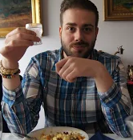

About me
Born in Basingstoke, raised in Gloucestershire and settled in Hull.
I currently work as a Support worker for vunerable adults but my real passion is coding which I have learnt to do in my spare time by reading and building projects.
Using computers from a young age I always had a passion for using them and I wanted to make things but couldnt really get to grips with conventional art with a pen or pencil. When I discovered I could make art from using words, I finally got to know the feeling of creating something, the frustration of running into a problem and the elation of being able to solve that problem.
I see web development as a constantly evolving profession and as I like to have a new challenge, this means I will always be engaged with wanting to learn something new.
Reading list
- Internetingishard.com by Oliver James.
- JavaScript for beginners by Adam Vardy.
- TeamTreehouse.com beginner level javascript.
Hobbies
- Playing games
- Learning french
- reading books
- Meeting new people
- Learning new skills
- Psychology